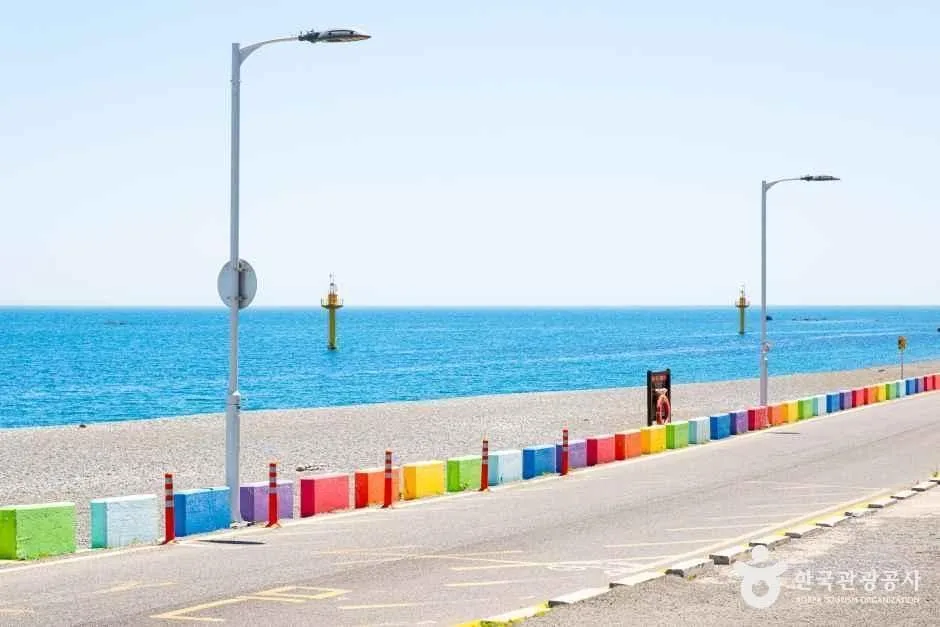
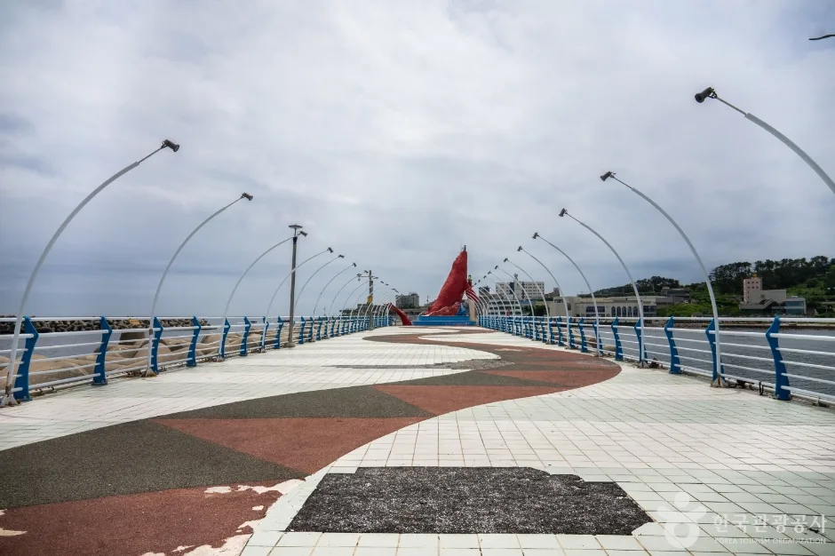
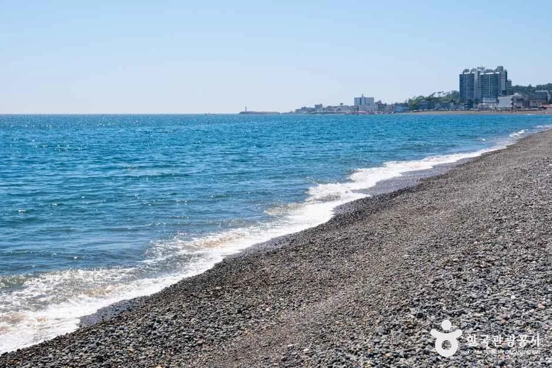
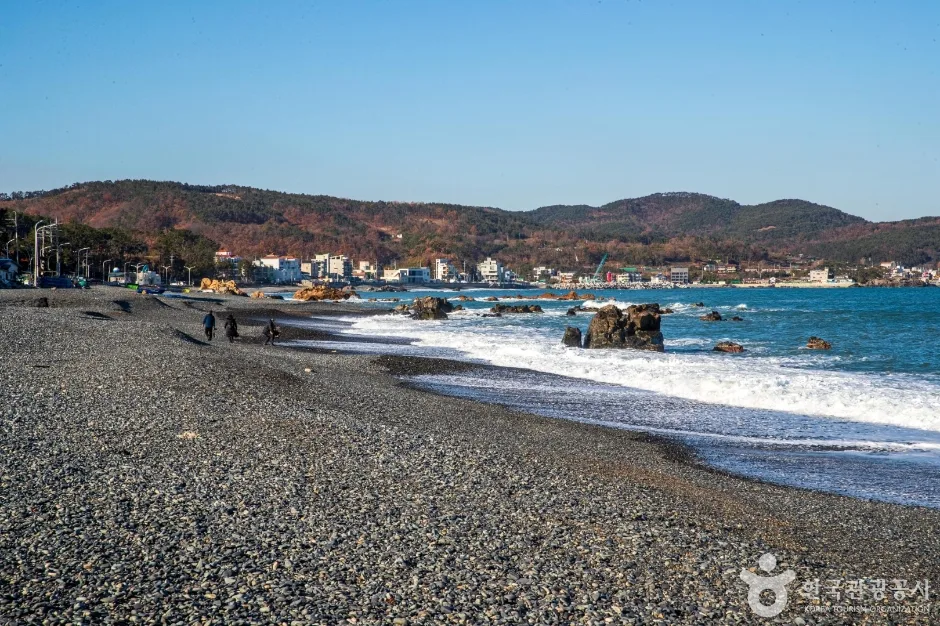
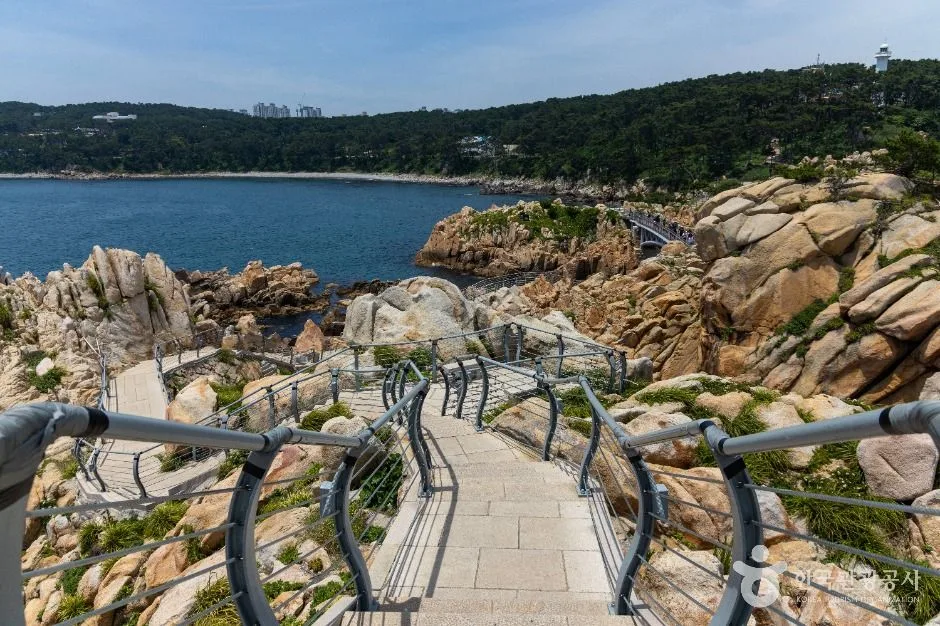
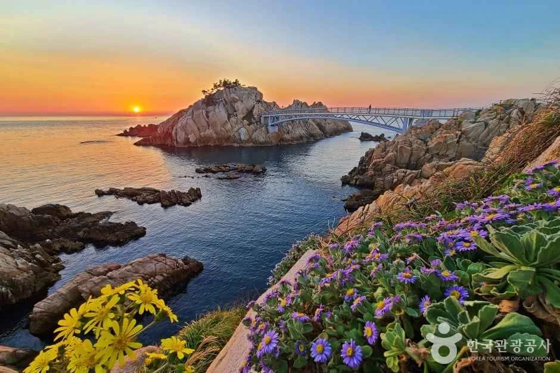
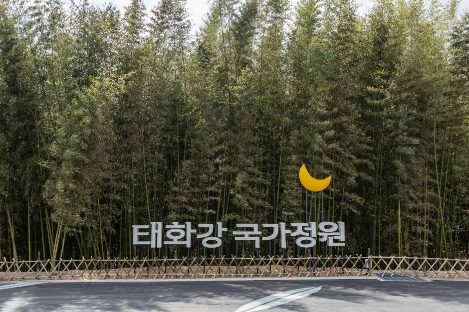
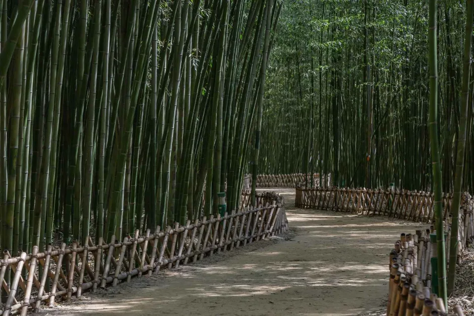
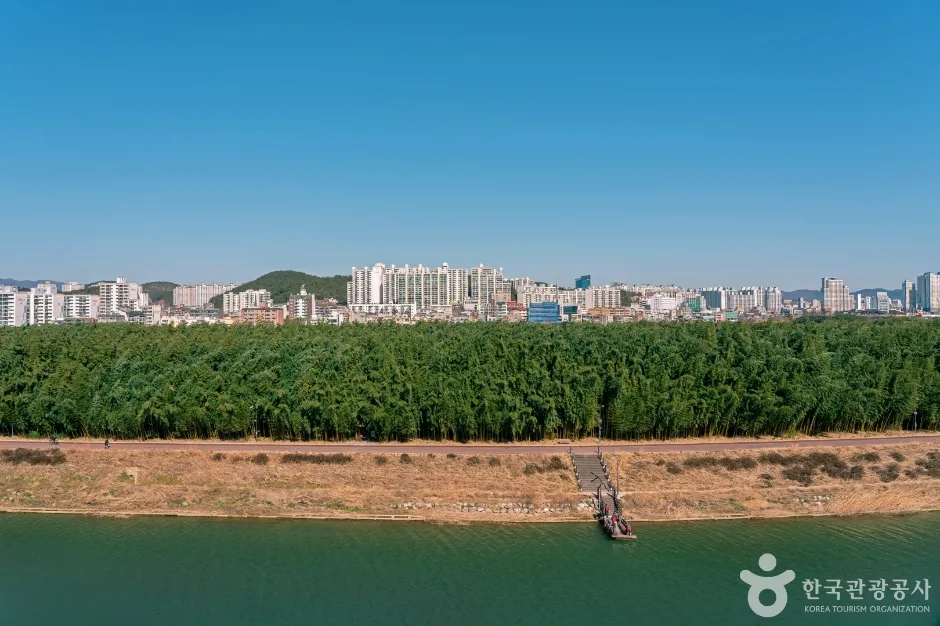
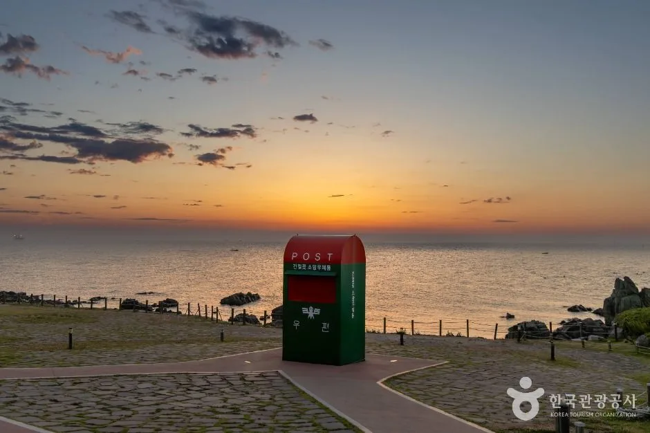

▲ 울산 북구 강동몽돌해변의 몽돌. 오늘 밤 불꽃축제가 열리는 곳이다 사진=한국관광공사
오늘 10월 2일 밤, 울산 북구 강동몽돌해변에서 '2026 울산불꽃축제'가 열린다. 1,500대 드론과 25분짜리 불꽃이 바다 위를 채우는 행사로, 시작은 오후 7시 30분이다. 그리고 하루 뒤인 3일부터 이틀간은 남구 달동 왕생로가 빛의 거리로 바뀐다. 이 글은 두 행사를 자차 이동자 관점에서 묶었다. 오늘 밤 갈 사람에게는 막바지 점검 사항을, 오늘 못 가는 사람에게는 3~4일 왕생로 빛 거리 축제의 주차·교통·인근 코스를 정리했다. 일정과 통제 시간은 보도에 인용된 울산시·남구 안내를 기준으로 했고, 직접 확인하지 못한 부분은 그대로 적었다.
1. 오늘 밤 불꽃축제 — 시간표와 규모

▲ 강동몽돌해변 앞 해안도로. 행사 당일에는 이 일대 도로가 저녁 시간대 전면 통제된다 사진=한국관광공사
보도 기준 올해 불꽃축제는 4회째이며, 입장료는 무료다. 주최·주관은 경상일보, 후원은 울산시다. 주제는 '흐르는 정원의 시작, 몽돌'로, 드론쇼와 불꽃쇼가 이어진다.
| 시각 | 내용 |
|---|---|
| 19:30 | 축하공연 시작 |
| 20:10 | 개막식(경상일보 보도 기준) |
| 20:30 | 드론쇼(1,500대, 약 15분) 이어 불꽃쇼(약 25분) |
| 약 21:10 전후 | 종료 시각은 확인하지 못했다. 경상일보가 20:30부터 드론쇼·불꽃쇼를 약 40분 진행한다고 전한 것을 바탕으로 한 필자 추산이며, 일부 보도의 19:30~21:40 표기는 근거를 확인하지 못했다 |
불꽃은 12인치급 대형 불꽃이 바다 위 바지선 4척에서 발사되며, 보도에는 상승 높이 250~300m로 소개됐다. 개화 반경(100~130m라는 수치가 일부 전해진다)은 근거를 확인하지 못했다. 4막 구성으로 '몽돌이 꿈의 정원을 향해 가는 이야기'를 그린다. 멀리서 보는 관람객을 위해 음악 앱으로 배경음악을 들을 수 있다고 한다. 경상일보는 이 앱을 '오렌지 플레이어'로 표기했으나, 보도마다 표기가 달라 설치 전 공식 안내를 확인하는 편이 안전하다.
2. 자차 이동자 핵심 — 통제·주차·셔틀
| 항목 | 내용 |
|---|---|
| 차량 통제 | 10월 2일 17:00~22:00, 강동해안도로 강동중앙공원~카페 제이드 밀 구간 전면 통제 |
| 임시주차장 | 강동초·강동중·강동고 3개 학교 개방, 이 밖에 공영주차장·유휴부지·이면도로(구체 위치·수용 대수는 확인하지 못함) |
| 셔틀버스 | 남구 태화강 둔치 주차장, 중구 종합운동장에서 운행(운행 간격·막차 시간은 확인하지 못함) |
| 시내버스 | 강동해변 방면 7개 노선 증차·연장(노선 번호는 확인하지 못함) |
| 부대행사 | '해변으로 가요' 10월 2~3일 강동중앙공원, 드로잉쇼·거리공연(일부 보도 기준, 경상일보 기사에서는 확인하지 못함) |
ℹ️ 지금 시각(오후 1시대)이면 일찍 움직일수록 유리하다
행사장 앞 해안도로는 17시부터 막힌다. 차를 가져갈 거라면 통제 시작 전에 학교 임시주차장이나 외곽 주차장에 세우고 걸어 들어가는 편이 낫다. 귀가는 종료 직후 한꺼번에 몰리므로, 불꽃이 끝나는 21시 40분 전후 바로 차를 빼기보다 해변 근처에서 30분쯤 시간을 두는 계획이 현실적이다. 이 시간 추정은 필자의 판단이며 공식 안내가 아니다.
최신 교통 안내는 울산시·행사 주최 측 공지로 확인할 수 있다. 울산시 공식 홈페이지 바로가기
3. 관람 명당과 막바지 체크

▲ 정자항 방파제. 보도에서 관람 명당 후보로 꼽힌 구역 중 하나다 사진=한국관광공사
관람 명당으로는 강동중앙공원 메인 스테이지 앞, 오션뷰 카페, 정자항 방파제 구역이 거론된다. 바지선에서 쏘는 불꽃이어서 바다가 트인 곳이면 어디서든 보이지만, 해안도로가 통제되는 시간에는 차가 아니라 사람이 몰린다. 아래 체크포인트를 출발 전에 훑어두자.
✅ 오늘 밤 막바지 체크리스트
· 시작 19:30, 드론쇼 20:30, 종료 21:10 전후 추산(공식 종료 시각은 확인하지 못함)
· 강동해안도로 17:00~22:00 전면 통제(강동중앙공원~카페 제이드 밀)
· 주차: 강동초·중·고 임시주차장 또는 태화강 둔치·종합운동장 셔틀
· 바닷바람이 강하므로 가을 저녁 겉옷 필수(필자 권고)
· 우천·강풍 시 순연 여부는 확인하지 못했으니 출발 전 공지 확인
4. 내일부터 — 왕생로 빛 거리 축제는 어떤 행사인가
남구는 10월 3일부터 4일까지 이틀간 왕생로 일원과 달동문화공원에서 '2026 왕생로 빛 거리 축제'를 연다. 장소는 왕생로 일원과 달동문화공원이며, 경상일보는 달동문화공원 주소를 번영로 200(달동)으로 전했다. 낮에는 거리극·버스킹·거리 노래방·왕좌 포토존·미디어 퍼사드 체험·라이브 드로잉·로봇 캐리커처가, 밤에는 '빛을 걷는 거리'라는 이름으로 윈드 캐노피, 바닥 물결 빛, 약 200m 구간 가로수 라이트쇼, 홀로그램이 운영된다.
| 구분 | 10월 3일(토) | 10월 4일(일) |
|---|---|---|
| 왕생로 거리 | 거리극·버스킹·거리 노래방·포토존·야간 라이트쇼 | 동일 프로그램 지속 |
| 달동문화공원 | 구립 교향악단·합창단 공연, 19:00 개막식, 뮤지컬, 가수 민경훈 | 저녁 가수 소향 공연 |
| 상시 운영 | 회전목마·플리마켓·푸드존(보도 기준) | |
| 사전 공연 | 9월 29일~10월 2일 평일 12:30 왕생이길 '축제 미리보기' | |
울산 남구청 공식 행사 안내(남구 소식 게시글)에는 운영시간이 양일 모두 13:00~21:00으로 올라 있다. 문의는 남구 문화예술과(052-226-5412)다. 경상일보는 개막식을 3일 오후 7시로 전했다. 점등 시작 시각과 4일 공연 시작 시각, 우천 시 운영 여부는 확인하지 못했다. 보도에 따라 낮 거리공연 시간대를 소개한 곳도 있으나 중도일보 원문에는 구체 시각이 없어, 거리공연의 정확한 시각은 단정하지 않는다.
울산 남구청 공식 홈페이지 바로가기5. 왕생로 주차·교통 — 차량 통제 시간이 보도마다 다르다
| 구간 | 통제 시간 | 출처 |
|---|---|---|
| 남구청사거리~남울산우체국 앞 왕생로 약 420m | 10월 2일 20:00~10월 5일 03:00 | 경상일보·중도일보·중부뉴스통신 등 다수 보도 |
| 같은 구간 | 10월 2일 12:00~3일 07:00 | 일부 보도(단일 매체) |
ℹ️ 어느 쪽이 맞나
경상일보·중도일보 등 다수 보도는 2일 20시부터 5일 새벽 3시까지 약 420m 구간 통제로 일치한다. 남구청 행사 안내 게시글에서는 교통통제 시간을 직접 확인하지 못했으므로, 이 글은 다수 보도 기준을 따르되 3~4일에는 이 구간으로 차를 넣지 않는 쪽을 권한다. 축제 전용 주차장과 셔틀버스 운영 여부는 확인하지 못했다.

▲ 울산 동해안 몽돌해변. 불꽃축제 다음 날 왕생로로 가기 전, 낮 시간 해안 코스로 이어가기 좋다 사진=한국관광공사
자차 이동자를 위한 현실적인 접근법은 이렇다. 내비게이션 목적지를 '달동문화공원'으로 두면 통제 구간 안쪽으로 안내될 가능성이 있어, 인근 공영주차장이나 상가 주차장에 세우고 걸어 들어오는 방식이 안전하다. 인근 주차장의 위치·요금·수용 대수는 확인하지 못했다. 이틀간 인파가 모이는 저녁 시간대에는 주변 도로 정체를 감안해 대중교통 병행을 고려하자.
6. 인근 코스 — 불꽃과 빛 거리 사이 낮 시간 채우기
두 행사가 하루 간격이라 1박 2일 울산 일정이 가능하다. 낮 시간에 넣을 만한 후보를 정리했다.
| 코스 | 성격 | 참고 |
|---|---|---|
| 강동·주전 몽돌해변, 정자항 | 불꽃 행사장 인근 해안 산책 | 한국관광공사 DB에 등록된 해변·항구 |
| 화암주상절리~대왕암공원 | 동해안 31번 국도 드라이브 | 별도 기사에서 상세 코스 소개 |
| 반구천 암각화 | 세계유산 관람 | 별도 기사에서 주차·동선 소개 |
| 대왕암공원 | 동구 바다 절경 산책 | 한국관광공사 등록 명소 |

▲ 주전몽돌해변. 동구 해안의 대표 몽돌 해변이다 사진=한국관광공사

▲ 대왕암공원 해안 탐방로 사진=한국관광공사
해안 드라이브가 목적이라면 31번 국도를 따라 경주에서 울산까지 이어지는 코스가 있다. 자세한 구간별 소개는 기존 기사에 있다. 낮에 문화유산을 보고 싶다면 반구천 암각화 기사도 참고할 수 있다.
- 경주 문무대왕릉에서 울산 대왕암까지, 31번 국도 가을 해안길 — 화암주상절리·대왕암공원 포함 드라이브 코스
- 울산 반구천 암각화, 가을에 보는 법 — 주차와 관람 동선

▲ 대왕암공원의 해 질 녘 풍경(촬영 시기는 표기되지 않았다) 사진=한국관광공사
왕생로 가까운 낮 코스 3곳
왕생로 빛 거리 축제는 오후 1시부터 9시까지 열리므로, 낮 시간을 비워 두고 도심 쪽 코스를 먼저 도는 구성이 현실적이다. 아래는 한국관광공사 DB에 등록된 울산 대표 명소를 자차 기준으로 묶은 것이며, 소요시간은 필자의 대략적 추산이다.
| 코스 | 위치 | 권장 체류 | 자차 관점 메모 |
|---|---|---|---|
| 태화강 국가정원·십리대숲 | 중구 태화동 일대(도심, 남구와 태화강 건너편) | 1~2시간 | 왕생로와 같은 도심권이라 점등 전 시간 채우기에 무난. 주차장 위치·요금은 확인하지 못함 |
| 장생포 고래문화마을 | 남구 장생포고래로 271-1 | 2시간 안팎 | 남구 안쪽이라 왕생로와 가까운 편. 개방 시간은 확인하지 못함 |
| 간절곶 | 울주군 서생면 간절곶1길 39-2 | 1~2시간(이동 별도) | 도심에서 거리가 있어 저녁 행사와 함께 넣으면 빠듯할 수 있음. 일출 명소로 알려져 있음 |

▲ 태화강 국가정원 대나무숲 앞 표지. 축제 현장이 아닌 울산 연계 코스의 일반 풍경이다 사진=한국관광공사

▲ 십리대숲 산책로. 일반 풍경이며 촬영 시기는 표기되지 않았다 사진=한국관광공사

▲ 태화강 너머 대숲과 울산 도심. 일반 풍경이다 사진=한국관광공사

▲ 간절곶 소망우체통과 일출 무렵 바다(일반 풍경, 촬영 시기 미표기) 사진=한국관광공사
자차로 한 곳만 고른다면 도심 안의 태화강 국가정원이 이동 부담이 가장 적다. 간절곶은 일출·해안 풍경이 목적일 때 별도 일정으로 잡는 편이 낫다.
7. 하루 동선 제안 — 오늘 못 간 사람을 위한 3일
오늘 밤 불꽃을 놓친다면 3일 낮에 강동·정자항 해안이나 반구천 쪽을 돌고, 저녁에 왕생로로 이동하는 동선이 가능하다. 자차는 도심 진입 전 외곽에 세우고, 왕생로는 해가 진 뒤 점등 시간에 맞춰 걷는 구성이다. 소요 시간과 주차 요금은 확인하지 못했으니 실제 방문 전 내비 경로로 재확인하자.
| 시간대 | 활동 |
|---|---|
| 오전 | 반구천 암각화 또는 강동·정자항 해안 |
| 오후 | 31번 국도 드라이브 또는 대왕암공원 |
| 저녁 | 남구 달동 도착, 주차 후 도보로 왕생로 입장 |
| 야간 | 가로수 라이트쇼, 3일은 민경훈 공연·4일은 소향 공연 |
8. 요약
오늘(10월 2일) 19시 30분 강동몽돌해변에서 울산불꽃축제가 열리고, 20시 30분 드론쇼·불꽃쇼, 해안도로는 17~22시 통제된다. 내일부터 3~4일은 남구 달동 왕생로 빛 거리 축제다. 왕생로 약 420m 구간 차량 통제는 다수 보도 기준 2일 20시~5일 03시이며 일부 보도는 시간이 다르다.
다만 시내버스 노선 번호, 셔틀 운행 간격, 왕생로 인근 주차장 위치·요금, 우천 시 대책은 확인하지 못했다. 방문 전 울산시·남구청 공지를 확인하자.